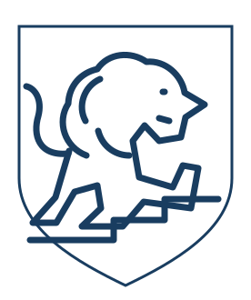

ASCEND名刺の展開イメージ
氏名・連絡先は掲載していません
氏名・連絡先は掲載していません
ライオンの強さと、階段の前進する姿。
青の一色で、静かな存在感を。
架空ブランド「ASCEND」の自主制作例・非公式モックです。実在の会社名・ロゴは使用していません。AI支援による独自ベクター案で、写真はありません。

BUILDING TOMORROW
端正な盾の輪郭に、階段へ足をかけるライオン。立体の陰影を使わず、名刺やWebの小さな表示でも輪郭が残る構成です。円形案は、親しみとまとまりを持たせています。
住まいの、その先へ。
架空のWebヘッダーへの展開例拡大しても輪郭が保たれるSVGベクター。採用案は、正式な表記・文字間・線幅・単色と反転を整えます。掲載の2案はコンセプト比較用で、完成マスターではありません。
表示中のSVGをダウンロード ↓本デモに受付・送信・外部サービス接続はありません。商標の調査・登録可能性の保証は含みません。実在する既存ロゴの模写ではありません。